Цель работы: изучение разных способов и приборов для измерения гидростатического давления и напора, и определение погрешностей приборов.
Гидростатическое давление p можно измерить двумя способами:
При этом величину давления рассчитывают по формулам:
р = F / S; (1.1)
p = pgh, (1.2)
где F – сила давления, Н;
S – площадь поверхности, м2;
p - плотность рабочей жидкости в приборе, кг/м3 ;
g – ускорение свободного падения, равное 9,81 м/с2;
h – высота столба жидкости, равная гидростатическому напору Н, м.
Для измерения давления по первому способу применяют деформационные манометры (пружинные и мембранные). Измерение напора осуществляют жидкостными приборами (пьезометрами и манометрами). В качестве рабочей жидкости в манометрах чаще всего используют воду, ртуть, спирт.
Для расчетов принимаем плотности:
Давление сухого атмосферного воздуха составляет 1 ат = 105 Па = 10 м вод. ст. = 10 000 м возд. ст. = 0,730 м рт. ст.
Различают следующие виды гидростатического давления:
Связь между ними определяется законом Паскаля:
pА = p0 + p , (1.3), где р0 – давление на свободной поверхности жидкости, равное рa, если сосуд открытый.
Если pА > p0 , то p – избыточное давление; если pA
< p0 , то p – вакуум. Величина гидростатического напора Н определяется по формуле (1.4)
Рис. 1.1. Схема лабораторной установки В состав лабораторной установки (рис. 1.1) входят:
Примечание: на стенде установлено последовательно два мембранных манометра с различными измерительными шкалами (на схеме показан только один).
Установив трехходовой кран в положение, обеспечивающее связь насоса с манометрами, движением рукоятки насоса создать давление в системе и замерить его, снимая показания на всех манометрах одновременно.
ВНИМАНИЕ! При работе с насосом следите, чтобы создаваемое давление не превышало 2,5 м вод. ст. по показаниям пьезометра.
Жидкостными приборами ртутным манометром и пьезометром измеряется напор, деформационными манометрами измеряется давление в единицах, указанных на шкалах приборов. Замеренные величины давления и напора вносятся в соответствующие графы таблицы основных замеров и расчетов.
Остальные графы таблицы заполняются по результатам пересчета давления и напора по указанным выше формулам.
Относительную погрешность прибора , %, определяют по отношению разности показаний соответствующего манометра и пьезометра, к показаниям пьезометра, условно принимая их за истинную величину.
, (1.5), где Aм – показания манометра, Па; Aп – показания пьезометра, Па.
В соответствии с классами точности деформационных приборов заводского изготовления, определяется максимальная систематическая погрешность прибора. Расчет выполняется по формуле Δмакс=, (1.6), где К – класс точности прибора, указанный на его циферблате, N – предельное значение шкалы прибора в соответствующих единицах измерения. Результаты замеров и расчетов сводятся в табл. 1.1.
|
Прибор |
Напор, м |
Давление |
Относит. погрешн., % |
К, N, |
Макс. погрешн. прибора, Δмакс |
||
|
кг/см2 |
кг/м2 |
Па |
|||||
|
Ртутный манометр |
|||||||
|
Пружинный манометр |
|||||||
|
Мембранный манометр 1 |
|||||||
|
Мембранный манометр 2 |
|||||||
|
Пьезометр |
|||||||